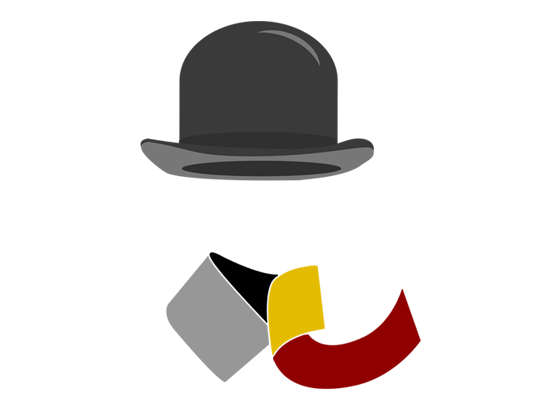

Après les succès du FOSS4G Belgium depuis 2015, OSGeo.be organisera le Jeudi, 24 Octobre 2019 une nouvelle édition de la conférence FOSS4G.BE à Bruxelles. Restez à l'écoute pour plus d'infos!
Envie de participer à l'organisation de cet évènement ? Contactez-nous sur info@foss4g.be